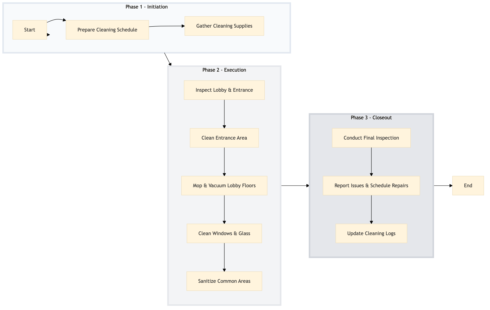

| Role | Steps |
|---|---|
| Executive Housekeeper | 1.1 3.1 3.2 |
| Housekeeping Supervisor | 1.2 3.3 |
| Housekeeping Staff | 2.1 2.2 2.3 2.4 2.5 |
| Step | Name | Role | System | Input | Output | KPI | Dec? | Exc? | Pain Point / Risk |
|---|---|---|---|---|---|---|---|---|---|
| 1.1 | Prepare Cleaning Schedule | Executive Housekeeper | Oracle OPERA Cloud | Daily cleaning schedule template | Updated daily cleaning schedule for lobby and entrance | < 5 min | N | Y | Inaccurate scheduling leading to missed tasks. |
| 1.2 | Gather Cleaning Supplies | Housekeeping Supervisor | Birchstreet Procurement | Cleaning supply inventory list | Supplies checklist with quantities and locations | < 10 min | N | Y | Running out of essential supplies. |
| 2.1 | Inspect Lobby & Entrance | Housekeeping Staff | Oracle OPERA Cloud | Lobby and entrance inspection checklist | Inspection report with notes and issues | < 15 min | Y | N | Overlooking critical areas during inspections. |
| 2.2 | Clean Entrance Area | Housekeeping Staff | Oracle OPERA Cloud | Cleaning protocols for entrance | Cleaned entrance area with sanitized surfaces | < 30 min | N | Y | Difficulty in accessing hard-to-reach areas. |
| 2.3 | Mop & Vacuum Lobby Floors | Housekeeping Staff | Oracle OPERA Cloud | Floor cleaning instructions | Clean and dry lobby floors | < 45 min | N | Y | Floors becoming slippery due to improper drying. |
| 2.4 | Clean Windows & Glass | Housekeeping Staff | Oracle OPERA Cloud | Window cleaning guidelines | Clean and streak-free windows | < 30 min | N | Y | Difficulty in reaching high windows. |
| 2.5 | Sanitize Common Areas | Housekeeping Staff | Oracle OPERA Cloud | Sanitization protocol for public areas | Sanitized common areas and surfaces | < 20 min | N | Y | Using expired cleaning chemicals. |
| 3.1 | Conduct Final Inspection | Executive Housekeeper | Oracle OPERA Cloud | Final inspection checklist | Final inspection report with any remaining issues | < 10 min | Y | N | Neglecting to check for overlooked areas. |
| 3.2 | Report Issues & Schedule Repairs | Executive Housekeeper | Oracle OPERA Cloud, Knowcross HotSOS | Final inspection report | Work order for maintenance issues | < 5 min | N | Y | Delays in reporting and resolving maintenance issues. |
| 3.3 | Update Cleaning Logs | Housekeeping Supervisor | Oracle OPERA Cloud | Cleaning logs template | Updated cleaning logs with details of the day's work | < 10 min | N | Y | Inaccurate or incomplete log entries. |
This process outlines the steps involved in cleaning the lobby and entrance area of a full-service Marriott hotel using Oracle OPERA Cloud PMS. The goal is to ensure that the public areas are clean, presentable, and safe for guests.